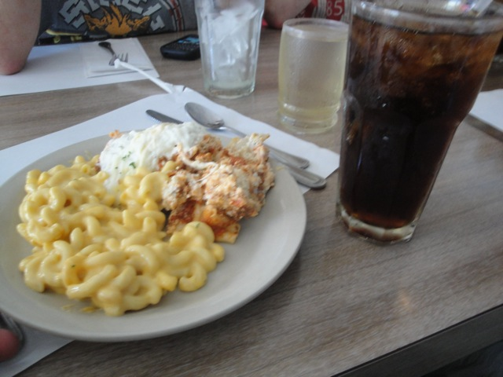
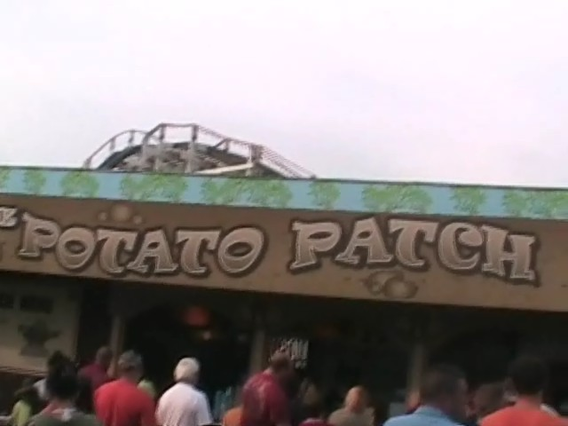
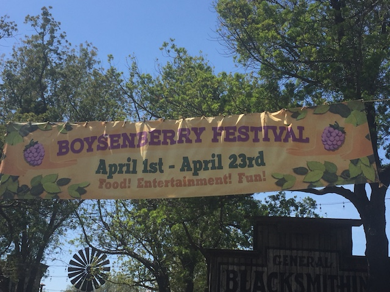
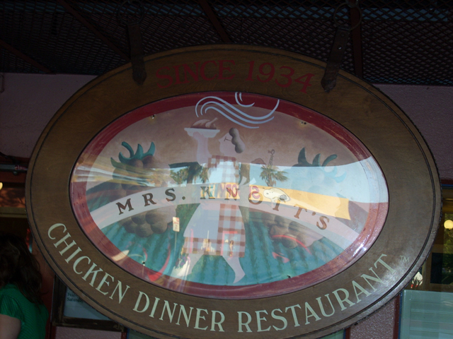
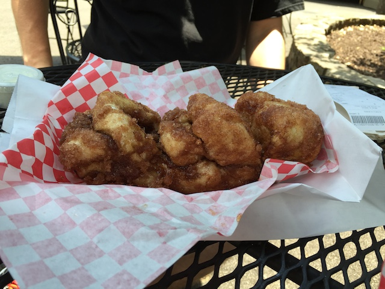

| |
Top 10 Theme Park Dining Options

Welcome to an Incrediblecoasters Top 10 List. When we list stuff, we actually explain why. Theme Park Dining Options. When most of us think of theme park dining options, we all think of typical amusement park food. Pizza, hot dogs, and hamburgers, these are at the staple of the theme park and are the staples of typical amusement park food. While not necesarrily bad, typical amusement park crap is pretty typical, generic, fast food quality, and if you go to theme parks as often as I do, it gets REALLY old REALLY fast. Now, typical amusement park crap can come in varying different degrees from really good to really bad, though once you eat enough of it, you get burned out on it. I got sick of it to the point where I don't even eat it when we take visits to SFMM anymore. Nowadays, we'll go to a unique local place like Jimmy Deans, or if its something of the same quality as some generic fast food place, it's cheaper. However, we sometimes forget about the parks that don't serve up typical amusement park. These parks serve some really good food that goes out and beyond that actually makes us want to eat the actual food that the park serves, which is quite helpful. So, if you want to grab something to eat, go ahead because we'll be looking at 10 different parks in the world with some of the best dining options. These are the Top 10 Theme Park Dining Options.

#10.

Gröna Lund
Stockholm, Stockholmn, Sweden
Gröna Lund is one of Europe's most memorable and stand out amusement parks, and they show that not only with its skyline, setting, and rides. But the food that they put out for all of the guests that visit is pretty good as well. I'm not sure if this is served in any particular resteraunt they have in the park, but the park did serve us this lasagna and it was extremely good. Sure, there wasn't a lot of marinara sauce in the lasagna. However, there was a lot of beef in it. And a lot of cheese. So yeah. That was incredibly good lasagna. And when lasagna is a favorite of mine, that's gonna really rank up. But on top of all of that, Gröna Lund has a lot of other resteraunts throughout the park. They have a Mexican Resteraunt, a BBQ Resteraunt, a World Resteraunt, and a Pizza Place right by the sea. There's also a lot of small little places you can go for quick and easy food. I know I particuarly liked the Thai place. So there's that, and a lot more to check out.
 
#9.

Knoebels
Elysberg, Pennsylvania, U.S.A
While the other stuff we've listed was good and all, this where the parks we list on our Top 10 List go from good to freaking fantastic, and nothing is as freaking fantastic as the food at Knoebels. Now, Knoebels has a great reputation for its food, winning all sorts of awards for their food. And I must admit, they're all right. Knoebels has awesome food. The one place I ate at Knoebels and what is probably their most well known food place, Cesaris Pizza. I must admit, it is indeed really great pizza, and keep in mind, I know good pizza when I taste it. I've taken Scotts Pizza Tour in New York City, and I've eaten real authentic pizza in Italy. so I can safely say that this is good pizza and totally worth the money, which BTW is worth noting. This place is freaking cheap!!! While Knotts Berry Farm back west charges you $8 to upgrade your $8 burger to a combo meal, Knoebels has this entire much higher quality meal for only $3.75!!!! That's f*cking amazing. And that's only the food I ate at Knoebels. The stuff I've heard about from others sounds mouth watering good. Yeah, don't just eat a meal at Knoebels, be sure to snack your way around the park. It'll totally be worth it and won't burn a hole in your pocket due to the actually decent prices. =)
#8.

Tivoli Gardens
Copenhagen, Sjælland, Denmark
All right. Tivoli Gardens is an interesting park as far as dining goes. If you're just walking throughout the park, you may be scratching your head and be wondering why the hell Tivoli Gardens is on this list. Most of the food that they serve throughout the park just is your typical amusement park crap. Burgers, Hot Dogs, all that stuff. Not terrible, but at the same time, it's just Danish Fast Food. So why the hell then would Tivoli Gardens be on our Top 10 Theme Park Dining Options List? Well, primarily because this place has a ton of resteraunts. They have a steakhouse, a brewery, a Japanese resteraunt, a French resteraunt, a BBQ resteraunt, an American Diner, two Italian resteraunts, a pirate themed restarunt, a fancy resteraunt, several that claim to be serving authentic Danish cuisine, and some popular chain resteraunts. Now something worth noting about these resteraunts. While they are part of Tivoli Gardens, they're also not part of Tivoli Gardens. You see, several of these resteraunts may be part of the park, but there's also a street entrance for these resteraunts. So even if you don't visit the park, you can just stop on in, and eat at one of these resteraunts that are competing with all the local resteraunts in Copenhagen. And they all do pretty good. They draw in locals and tourists alike. And it competes with the local resteraunts. To the point that I didn't even think I was eating at a theme park. I just thought I was going in and eating at a random steakhouse. And it was better than many steakhouses. Seriously, these Tivoli resteraunts are really freaking good.
 
#7.

Knotts Berry Farm
Buena Park, California, U.S.A
Now for many of you, Knotts Berry Farm may have you scratching your head. Why the hell is this here? It seems to just be typical amusement park crap. And expensive amusement park crap. Expensive by amusement park standards expensive. So why is this on the list? Several things. #1. They're adding more unique resteraunts over time. So there's more unique food and more options. #2. Mrs. Knotts Chicken Resteraunt. This resteraunt serves some seriously awesome food. The rolls that they first serve you must be filled with cocaine, because I end up eating like 10 of them, and they are that good. They have their own drink, Boysenberry Punch, which is unique to Knotts Berry Farm, and very good, and is avaliable all throughout Knotts Berry Farm. The chicken they serve itself is very tasty, and is definetly very good, and not only that, but this resteraunt has a wide variety of options to choose from. And yes, all of them are very good. And don't forget the pie. Mmm. Pie. *drool* And on top of that, its actually decently priced!!! And finally, #3. The Knotts Boysenberry Festival. Every year, for a couple weeks in April, Knotts hosts a special event called the Knotts Boysenberry Festival, and they always serve these unique foods throughout the park. Primarily, they're all Boysenberry flavored, and they are some of the best things ever. Honestly, the only reason Knotts Berry Farm isn't much higher on the list is because a lot of these amazing Boysenberry items, such as Boysenberry Wings, Boysenberry Meatballs, Boysenberry Trifle, etc. But in good news, a few of the items have become yearround items. Boysenberry Beer, Boysenberry Cream Soda, now avaliable year round. And on top of that, you can buy the Boysenberry BBQ sauce in the gift shops, and can make your own Boysenberry Wings & Meatballs. My own Boysenberry Wings & Meatballs. Gotta go make dinner now. Bye bitches!

#6.
Disneyland Resort
Anaheim, California, U.S.A
Now I will come out and admit it, the prices at the Disneyland Resort SUCK!!! That's a fact, though to be fair, they're still not as bad as at Knotts Berry Farm. But give the Disneyland Resort some credit for its dining. They've got a lot of options for you to eat good food around the resort. Yeah, I know that the Disneyland Resort does sell typical amusement park crap throughout the park, They've also got some really good and high quality resteraunts. Well, first off, they've got Storytellers, which is a personal favorite of ours at Incrediblecoasters and is our official resteraunt of the Disneyland Resort. But its not the only good park in the resort. They've also got many good sitdown resteraunts in Downtown Disney including Naples, the Rainforest Cafe, the ESPN Zone, and many other resteraunts. But even just throughout the Dinseyland Resort, they have really good Disneyland only snacks throughout the resort, such as the Dole Whip, which is freaking amazing. All this, plus just a really wide variety of options gives the Disneyland Resort the #6 spot on this countdown.

#5.

Universal Orlando Resort
Orlando, Florida, U.S.A
Like the Disneyland Resort, the Universal Orlando Resort also has a lot of typical amusement park crap in it as well. But luckily, they have quite a wide variety of dining options to enjoy as well. The most recognizable of these to coaster enthusiasts would without a doubt, be Mythos. It has recieved incredibly high ratings as being on of the best amusement park resteraunts of all time. However, lately, the reviews have been saying that Mythos is starting to slide downhill and may be Harry Potterfied to fit within the New Harry Potter Section of Islands of Adventures. Honestly, that wouldn't surprise me in the least bit as the park pretty much is saying "F*CK ANYTHING THAT'S NOT HARRY POTTER!!!" (Don't get me f*cking started on what Harry Potter did to Universal Orlando). But from what I tried in Hollywood, the Harry Potter food in there is good too, selling pumpkin juice, butterbeer (The foam is the best part), and Berties Botts Every Flavor Beans. Now I've also heard that the lines to try these items is f*cking ridicolous and would not be tolerated by Incrediblecoasters if the wait times are as long as I've heard, but it is still cool nevertheless to see the Universal Orlando Resort try out new food and have more options. And of course, there's always Citywalk, which has all sorts of great options.
#4.
Europa Park
Rust, Baden Wuerttemberg, Germany
Europa Park is one of the best theme parks on the planet. I love just about everything about this theme park, and that includes the dining. The whole park is themed to all the different countries throughout Europe, and with all those different countries, comes their different cuisines. And man. Europa Park goes all out when it comes to the foods and cuisines of these parks. Europe is a very interesting and diverse region of the world. And all that diversity is translated into all of the food that they serve throughout the park. For instance, in the Switzerland portion of the park, they serve Raclette. Now this isn't something that is a common theme park food. In fact, the only theme park I know that has that is Europa Park. But hey. I'm someone who really freaking loves cheese. So the fact that they serve raclette here is definetly something that makes me happy. Meanwhile, over in the Greece area of the park, they have Gyros that you can get. Not quite as unique as raclette. But it's still something that's not nearly as common as say, a hamburger, or pizza. And damn is it as good. Now of course, they also have burgers, pizza, and all that usual stuff. But the options they have are just everywhere. I know there's also the Food Loop resteraunt. I haven't checked what's on the menu, but I'm sure it's good. And it freaking won the THEA award in Gastronomy. So yeah. There's a ton of great food to choose from at Europa Park.
 
#3.

Silver Dollar City
& Dollywood
Branson, Missouri, U.S.A
& Pigeon Forge, Tennessee, U.S.A
I decided to tie Silver Dollar City and Dollywood. Because these two are sister parks, and even the food they serve is extremely similar. And it wouldn't be fair to choose one over the other. Known for their Southern Style food, Silver Dollar City & Dollywood have some of the best food you can possibly get at an amusement park. Nothing here is bad, nothing here is crap, it is all really cool, creative, and tastey. Well first of all, you know of the giant skillets of food that they serve in the park. That is just freaking amazing. Everythings fried, and covered in oil, and man does it taste so good. The park also has much more interesting food including pork rinds, ostritch jerky among many other exotic animals, coke with real sugar in glass bottles, and of course, the official meal they served us was amazing and included fried chicken, macaroni and cheese, mashed potatoes, spiced peaches, coke, and a slice of lemon meruigne pie. That's a meal I'd pay at a resteraunt, not the type of meal I'd get in an amusement park. Dollywood has several good resteraunts. Granny Ogle's Ham & Beans and Miss Lillian's Chicken House are just two of the parks most popular resteraunts to choose from. And of course, I can't forget about the Cinammon Bread located at both parks. OH MY GOD!!! SO F*CKING GOOD!!!!! THIS STUFF IS AMAZING AND I MEAN AMAZING!!!!! I could eat an entire loaf of this stuff, and is enough of a reason alone to make me want to go back both of these parks. So yeah, this sounds amazing and all, and it is. But it's still just the #2 spot. Which means something out there is even better than all that I mentioned. And that would be...

#2.

Tokyo Disney Resort
Urayasy, Chiba, Japan
All right. This is an obvious choice. I mean, not only is all the Disney food great and all, but....DAMN!!! The food at Tokyo Disney is just some of the best! I mean, you name one single type of cuisine that people like. They have really good iterations of it here. For instance, if you like Chinese food, they have some of the best Chinese food over at Vulcania. Not only does the resteraunt have an amazing atmosphere, but the food is great too. The Mexican food here is really good. Yes, you can get good Mexican food in Japan. And this is just the tip of the iceberg. They have really good waffles, great Gyoza, really good Curry. The Ice Cream selection is really great, including Sea Salt Monakas. F*cking Delicous. They have all sorts of great stuff. But perhaps the most famous stuff they have here is the popcorn. Wait what? How the hell is popcorn so special? Well, they have all sorts of crazy flavors. Curry Popcorn, Black Pepper Popcorn, Soy Sauce & Butter Popcorn. You wouldn't think that these flavors are any good. But DAMN!!!! They are so good. Who knew that Soy Sauce & Butter Popcorn would be so good! And that's not even going over the sweet popcorn flavors, like Strawberry and Honey. It's amazing that these popcorn flavors haven't caught on outside Tokyo Disney, cause they're great.
 
#1.

Walt Disney World Resort
Lake Buena Vista, Florida, U.S.A
All right. This just had to make the #1 spot. I mean, Epcot alone gives the Walt Disney World Resort this spot for all its amazing pavilions. While I only ate at the Mexico and France Pavilions, they seriously were really f*cking good. The Mexico Pavilion had some of the best Mexican Food I ever had in my life, and keep in mind that I'm from Southern California, where I'm surrounded by good Mexican Food, especially in Ventura. So I mean it when I say it. The France Pavilion was good, interesting, and much better than typical amusement park crap. And then of course, we have Club Cool which lets you try soda from all around the world. Try the Chinese Watermelon Soda and the Mexican Apple Soda. Those kick major ass, and everything except the Beverly tastes good. And thats just Epcot. MGM Studios has Prime Time Cafe, which does a great job replicating a stereotypical 50s Family Meal, and of course, outside the resort, the dining options are just endless. In fact, one of the best meals I ever had in my life was at the Citricos Resteraunt in the Grand Floridian Hotel which was freaking amazing. And of course, there are countless other options, including Fine Dining to choose from. Yeah. All the other parks may have great food, but only the Walt Disney World Resort offers f*cking fine dining. So yeah. There's no doubt when we say that the Walt Disney World Resort has the best dining options of any theme park in the world.

So now I'm sure you know what you're thinking. "Wow. That was the list. That is so wrong." Well no. This is just the current list. I haven't eaten at every single theme park, so until I do, this list is innacurate for a world wide description. There are still many parks I have yet to visit and try the dining at the park. And even when I do eat at a theme park, I don't try everything. So maybe when I ate at X park, I ate the hamburgers, and they tasted like sh*t, so X Park did not make the list. However, X Park Fanboy tells me that I'm wrong because I did not eat the tacos, which are freaking amazing apparently, so now X Park is apparently wrongly neglected in the Top 10 Theme Park Dining Options list because instead of eating their tacos for lunch, I instead decided to try their hamburgers. I mean, if something is highly rated enough, I will try and eat it. For instance, the Cinnamon Bread at Silver Dollar City is highly ranked by enthusiasts everywhere because, yeah. It's THAT good. However, many great places to eat, such as Storytellers, are not passed on through enthusiast to enthusiast, so they won't eat there. So the tacos at X Park simply don't have the advertising to be well known, leaving them to be a hidden gem. And then of course, people have different tastes and certain people can't stand certain things. David & Britanny can't stand meat, Celeste has all sorts of odd food preferences, and quite frankly, anything with egg in it makes me want to vomit. I HATE HATE HATE HATE HATE EGGS!!!!!!!!!!! They are disgusting. Oh, and milk, spicy foods, mint, black coffee, jager, and most seafood is pretty bad as well. So obviously, your taste will definetly effect how you rank a park in their dining options. So for instance, if the tacos at X Park that I'm neglecting are Egg Tacos, then no f*cking wonder I skipped them. That's disgusting. Wouldn't even give it a chance. Not putting X Park on the list is totally justifiable. (In case you don't know, I made X Park up. No such park serves Egg Tacos. They're all smart enough to know that that's just plain disgusting.) But yeah, that'd totally effect the list. But any one of these parks has good food. So if you're ever at one of these parks, don't go off and have a picnic in your car or go off to a nearby resteraunt, stay and check out these great dining options. (Knotts only applies for dinner at Mrs. Knotts. DEFINETLY do that for the rest of their food.)
|